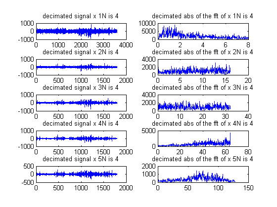
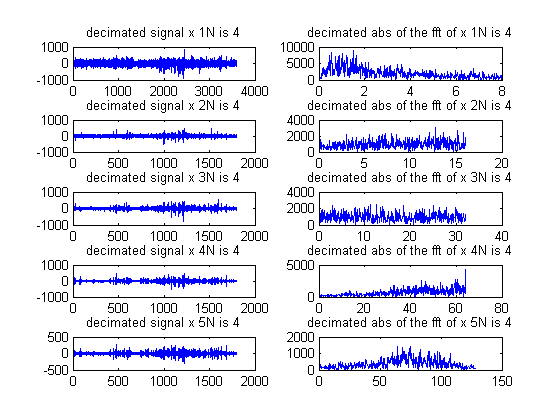

4.
Medeiros: db1,db6;
clear; clc; close all; load EEG4wlt; sr=256; % Fs= sampling frequency= 1/T, where T=sampling period=50ms. sr=Fs; % This is more than sufficient to sample the given signal. t=[1/sr:1/sr:(length(x)/sr)]'; % by utilizing the given sampling rate sr, we split a total time % time=sapmles/sampling rate=3600 second=60 minutes= 1hr. lx=length(t); figure plot(t,x),title('EEG Signal'),xlabel('t,time'),ylabel('x'); dbname='db1'; % Daubechis 8 nfft=1024; % Defining an nfft to perform the fft . fx=fft(x,nfft);% performing the fft afx=abs(fx(1:nfft/2+1)); % achieving absolute value of the fft ; f=(0:nfft/2)/nfft*sr; % defining the discrete frequency domain based on the nfft point DFT. fgn=1 % figure iteration number. figure(fgn) subplot(211),plot(t,x), title ('EEG sig x vs t '), subplot(212),plot(f,afx),title('abs value of the fft of x'),xlabel('f'),ylabel('abs(X)'); N=4; % filter level to decimate waves. for a=1:3 [C,L]=wavedec(x,N,dbname); % Decimation of waves. returning values and coefficients to variables C and L begin=1; fgn=fgn+1; % incrementing the figure counter figure(fgn) str=''; for k=1:N+1 fin=begin+L(k)-1; wc(a*k)={C(begin:fin)}; % Allocating the respective decimated signal to separate cells d=cell2mat(wc(a*k)); %placing the cells in one variable. fd=fft(d,nfft); % taking the fft of the cell with the decimated signals. afd=abs(fd(1:nfft/2+1)); % Now the absolute value of the function. begin=fin+1; if k<2 p=N % in the case we are going through our first iteration , we set p to level 3 else p=p-1; end t=(0:L(k)-1)/(sr/2^p); % creating the appropriate time domain. f=(0:nfft/2)/nfft*sr/2^p; %frequency representation. figure(fgn) str=num2str(k); subplot(N+1,2,2*k-1),plot(t,d),title(['decimated signal x ',str,'N is ',num2str(N)]) % ploting the raw value of the decimated portion of the function subplot(N+1,2,2*k),plot(f,afd),title(['decimated abs of the fft of x ',str,'N is ',num2str(N)]) % plotting the abs value of the same. end fgn=fgn+1; N=N+1; end
fgn =
1
p =
4
p =
5
p =
6
 
